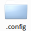
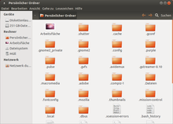
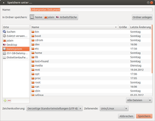
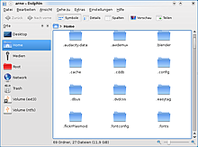
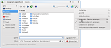
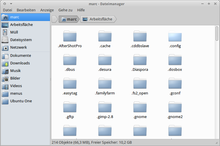

Wiki
Mitmachen
- Wikiartikel anlegen
- Howto anlegen
- Wiki-Referenz
- Wiki-Syntax
- Baustellen
- Artikelideen
- Ungetestete Artikel
- Ausbaufähige Artikel
- Fehlerhafte Artikel
- Rund ums Wiki
Konfiguration
- Backlinks anzeigen
- Exportieren
Versteckte Dateien
Dieser Artikel wurde für die folgenden Ubuntu-Versionen getestet:
Dieser Artikel ist größtenteils für alle Ubuntu-Versionen gültig.
 Verzeichnisse oder Dateien, die mit einem Punkt beginnen, also beispielsweise .gnome oder .mozilla usw. zeigen alle Dateimanager und selbst das Terminal bei einem einfachen ls nicht direkt an. Man bezeichnet solche Dateien bzw. Ordner meist als "versteckte Dateien bzw. Ordner".
Solche Dateien und Verzeichnisse findet man am häufigsten im Homeverzeichnis eines jeden Benutzers. Sie enthalten die Einstellungen von Anwendungsprogrammen. So können Konfigurationsdaten und eigene Daten im Homeverzeichnis stehen, ohne dass man als Anwender den Überblick verliert.
Sucht man eine bestimmte Konfiguration, weil man diese beispielsweise löschen möchte, um die dazu passende Anwendung mit einem "sauberen" - weil neuen - Profil starten möchte, so muss man die Anzeige von versteckten Dateien erst aktivieren.
Achtung!
Neben Konfigurationen können versteckte Dateien oder Verzeichnisse auch sehr sensible Daten wie persönliche Schlüssel oder die Dateien des verschlüsselten eigenen Homeverzeichnisses enthalten (vgl. ecryptfs). Im Umgang mit versteckten Dateien und Verzeichnissen sollte man deshalb die gleiche Sorgfalt walten lassen wie mit nicht-versteckten, da sonst ein unerwünschter Datenverlust droht.
Ubuntu / Nautilus¶
 Der Dateimanager Nautilus der GNOME Desktopumgebung zeigt von Haus aus solche versteckte Dateien nicht an. Der schnellste Weg die Anzeige von versteckten Dateien zu aktivieren, ist die Tastenkombination Strg + H oder der Menüeintrag "Ansicht -> Verborgene Dateien anzeigen". Diese Einstellung gilt für das aktuelle Fenster von Nautilus. Schließt man dieses, ist die Anzeige von versteckten Dateien wieder deaktiviert.
Möchte man sich solche Dateien oder Ordner permanent Anzeigen lassen, so kann man in den Einstellungen von Nautilus unter "Bearbeiten -> Einstellungen -> Ansichten -> Verborgene Dateien und Sicherheitskopien anzeigen" die Anzeige von versteckten Dateien permanent aktivieren.

Dateidialog¶
Öffnet oder speichert man eine Datei aus einer Anwendung heraus, so erscheint ein Auswahldialog mit einem Dateibrowser. Dieser zeigt üblicherweise keine versteckten Dateien an. Möchte man hier dennoch versteckte Dateien oder Ordner sehen, so kann man mit der rechten Maustaste in die Dateiliste klicken und über die Option "Verborgene Dateien anzeigen" die Anzeige von versteckten Dateien (de-) aktivieren. Diese Einstellung wird automatisch gespeichert und bleibt so erhalten, bis man die Anzeige wieder deaktiviert.
Kubuntu / Dolphin¶
 Auch der Dateimanager Dolphin der KDE Desktopumgebung blendet versteckte Dateien üblicherweise aus. Möchte man versteckte Daten schnell ein- oder ausblenden, so kann man dazu die Tastenkombination Alt + . oder den Menüeintrag unter "Ansicht -> Versteckte Dateien anzeigen" benutzen.
Möchte man dauerhaft die versteckten Dateien angezeigt bekommen, so kann man in den Einstellungen unter "Ansicht -> Ansichtseigenschaften anpassen ... -> Versteckte Dateien anzeigen" aktivieren, so dass Dolphin versteckte Dateien und Ordner immer anzeigt.

Dateidialog¶
Möchte man versteckte Dateien und Ordner beim Speichern aus einer Anwendung heraus anzeigen lassen, hilft ein Klick auf das Symbol in Form eines Zahnrädchens in der oberen rechten Ecke des Dateidialoges weiter. Über den Menüpunkt "Versteckte Dateien anzeigen" werden schließlich auch die versteckten Dateien sichtbar gemacht. Noch einfacher als über das Dropdown-Menü erreicht man diese Darstellung mit einem Tastendruck auf F8 .
Xubuntu / Thunar¶
 Der Dateimanager Thunar der Desktopumgebung Xfce verhält sich hier genauso wie Nautilus. Die versteckten Dateien können mittels Strg + H bzw. "Anzeige -> Verborgene Dateien anzeigen" ein- und ausgeblendet werden. Im Gegensatz zu den anderen beiden bisher genannten Dateimanagern behält Thunar diese Einstellungen nach Beenden bei. Es gibt keine Option in den Einstellungen, das Verhalten zu steuern.
Lubuntu / PCManFM¶
Der Dateimanager PCMan File Manager der Desktop-Umgebung LXDE verhält sich ebenfalls analog. Die versteckten Dateien können mittels Strg + H bzw. über "Ansicht -> Versteckte Dateien anzeigen" ein- und ausgeblendet werden. Wie bei Thunar werden diese Einstellungen nach dem Beenden beibehalten.
Diese Revision wurde am 12. April 2015 17:24 von linux_joy erstellt.
- Erstellt mit Inyoka
-
 2004 – 2017 ubuntuusers.de • Einige Rechte vorbehalten
2004 – 2017 ubuntuusers.de • Einige Rechte vorbehalten
Lizenz • Kontakt • Datenschutz • Impressum • Serverstatus -
Serverhousing gespendet von